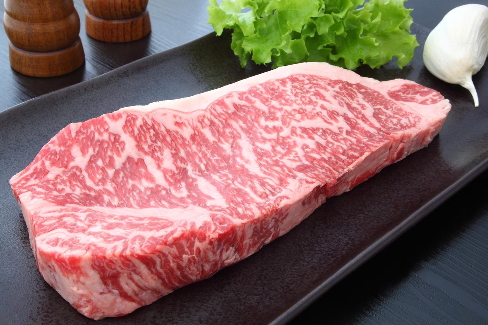

Wagyu Rund
Een wagyu (Japans: 和牛, wagyū) is een van oorsprong Japans runderras, dat bekend is vanwege het zeer exclusieve en smakelijke rundvlees. Wagyuvlees is dan ook erg kostbaar. Wa is een Oudjapanse verwijzing naar het land Japan, of naar zaken uit Japan, en met een van de betekenissen van gyu wordt gedoeld op rundvlees "in levende zin", ofwel op vleesvee. Het begrip wagyu is in Japan dan ook een algemene aanduiding.
Er zijn vier soorten wagyu in Japan. Het beroemdst is het Japanse zwarte rund of de zwarte wagyu. Dit verenigt in zijn huidige commerciële vorm zowel de Fujiyoshi-, Kedaka- als Tajiri-lijn, die elk op zich ook beschouwd worden te voldoen aan de fokstandaard van de zwarte wagyu.
Het Japanse bruine rund of de bruine wagyu komt voort uit de Kochi- en Kumamoto-lijn. Zowel de zwarte als de bruine wagyu zijn dus geen oude inheemse rassen zoals het mishimarund, maar pas na de Tweede Wereldoorlog door gerichte fok ontstaan uit verschillende – op hun beurt door buitenlandse rassen beïnvloede – lokale bloedlijnen.